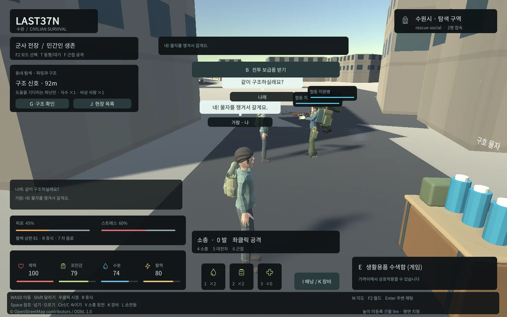

Tracefolio REPORTS & ISSUES
Tracefolio REPORTS & ISSUESUnity Web 한국어 이름·채팅 입력 손실 수정
해결실제 Web 입력에서 ?만 전송된 실패를 확인하고 HTML 입력/조합 Enter·Unity 키보드 포커스를 연결했습니다.
작업 결과
현재 Web의 한국어 이름·양방향 채팅·말풍선/만료와 기본8788 입력을 재검증했습니다.
변경 내용
재현 조건
Unity6000.0.83f1 WebGL, Edge156.0.4314.50, Windows.
재현 순서
기존 IMGUI 채팅에 한국어 문장을 입력하고 다른 접속자의 수신 내용을 확인했습니다.
기대 동작
입력한 한국어 이름과 문장이 서버/다른 플레이어에 유지됩니다.
실제 동작
초기 실제 Web 검사에서 한국어가 ?로만 전송되어 검증에 실패했습니다.
원인
Unity6.0 Web IME 제한을 공식 버전 문서와 실제 입력 실패로 확인했습니다. 게임 기본 입력 경로가 한국어 조합을 보존하지 못했습니다.
적용 내용
브라우저 HTML 입력 폼, UTF-8 SendMessage, 조합 중 Enter 전송 방지, Unity WebGLInput.captureAllKeyboardInput 전환/복원을 구현했습니다. 이름과 채팅에 같은 입력 경로를 사용합니다.

검증
서버의 발신자 위조/중복·거리/월드 범위 검사, 실제 두 Edge에서 한국어 왕복/이름표/말풍선/6초 만료·조합 Enter·새 이름, 기본8788 실제 입력과 엔진 오류0을 확인했습니다. 실패 자료는 docs/qa/rescue/attempt-web-01에 보존했습니다. 공식 Unity6.0 입력 문서: https://docs.unity.com/en-us/engine/6000.0/manual/platform-specific/webgl/develop/input . 교훈은 기존 버전/실행 근거 지침에 포함되어 전역 변경 없음입니다.
남은 사항
수정한 범위를 실제 재검증했습니다. 모든 OS IME/장비 조합과 운영 환경의 검증을 의미하지 않습니다.
작업 시간
- 제안 시간: 최초60
100분, 장비3560분, 행동40~70분의 추가 범위에 포함. - 실제로 완료된 시간: 수정·실행 검증 기록 2026-10-31 03:55:20 KST. 전체 작업 시작2026-10-31 01:35:00 KST.
- XERJ: 미사용 — XERJ 미제공, rg·소스/Unity 로그·실제 헤드리스 게임으로 검증했습니다.